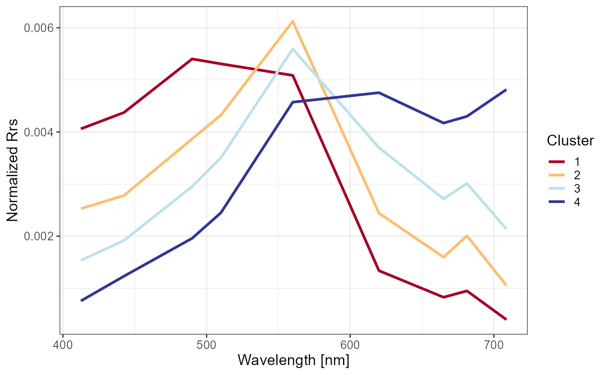

R/Algorithms_assessment.R
Getting_Asses_results.RdThis function mainly use function Assessment_via_cluster to get
assessments both from fuzzy and hard mode. Specifically, it will return the accuracy and precision of
MAE,CMAPE,BIAS, and CMRPE which would be seemed as the input value of
function Scoring_system.
Getting_Asses_results( sample.size, replace = FALSE, pred, meas, memb, metrics_used = 1, cluster = apply(memb, 1, which.max), seed = NULL, log10 = TRUE, valid.definition = list(negative = FALSE, percent = 0.6) )
| sample.size | Sample size. This supports a bootstrap way to run the function Assessment_via_cluster. The number should not be larger than the row number of pred or so. |
|---|---|
| replace | Logical, replace, default as |
| pred | Prediction matrix or data.frame |
| meas | Measured (actual) matrix or data.frame |
| memb | Membership matrix |
| metrics_used | The metric combination used in the function. Default is If If |
| cluster | Cluster vector. Could be calculated by the parameter |
| seed | Seed number for fixing the random process. See |
| log10 | pass to Sampling_by_sort. |
| valid.definition | The definition of valid prediction, default as
|
A list containing fuzzy and hard results from Assessment_via_cluster
The row number of pred, meas, memb, and cluster should be the same.
This function is designed for bootstrapping process to get Chla algorithms assessment. Therefore,
parameters of Assessment_via_cluster is set as fixed such as log10 = TRUE,
na.process = TRUE. Given that, I will not export this function in latter to avoid confuses.
Other Algorithm assessment:
Assessment_via_cluster(),
Sampling_via_cluster(),
Score_algorithms_interval(),
Score_algorithms_sort(),
Scoring_system()
library(FCMm) library(ggplot2) library(magrittr) library(stringr) data("Nechad2015") x <- Nechad2015[,3:11] wv <- gsub("X","",names(x)) %>% as.numeric set.seed(1234) w <- sample.int(nrow(x), 300) x <- x[w, ] names(x) <- wv nb = 4 # Obtained from the vignette "Cluster a new dataset by FCMm" set.seed(1234) FD <- FuzzifierDetermination(x, wv, do.stand=TRUE) result <- FCM.new(FD, nb, fast.mode = TRUE)#>Chla <- Nechad2015$X.Chl_a..ug.L.[w] Chla[Chla >= 999] <- NA dt_Chla <- run_all_Chla_algorithms(x) %>% as.data.frame dt_Chla <- data.frame(Chla_true = Chla, BR_Gil10 = dt_Chla$BR_Gil10, OC4_OLCI = dt_Chla$OC4_OLCI, OCI_Hu12 = dt_Chla$OCI_Hu12, NDCI_Mi12= dt_Chla$NDCI_Mi12) %>% round(3) w = which(!is.na(dt_Chla$Chla_true)) dt_Chla = dt_Chla[w,] memb = result$res.FCM$u[w,] %>% round(4) cluster = result$res.FCM$cluster[w] Asses_results <- Getting_Asses_results(sample.size=length(cluster), pred = dt_Chla[,-1], meas = data.frame(dt_Chla[,1]), memb = memb, cluster = cluster)